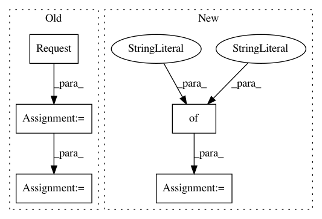

e3d577b5595af3e1c9a05d3be84dbdf1a7c4aa20,nilearn/datasets/neurovault.py,,_get_batch,#Any#Any#Any#Any#,962
Before Change
urllib.error.HTTPError is a subclass of URLError.
request = Request(query)
request.add_header("Connection", "Keep-Alive")
opener = build_opener()
_print_if("{0}getting new batch: {1}".format(
prefix_msg, query), _DEBUG, verbose)
try:
resp = opener.open(request, timeout=timeout)
except Exception:
_print_if("Could not download batch from {0}".format(query),
_ERROR, verbose, with_traceback=True)
raise
try:
encoding = _get_encoding(resp)
content = resp.read()
batch = json.loads(content.decode(encoding))
except(URLError, ValueError):
_print_if("Could not decypher batch from {0}".format(query),
_ERROR, verbose, with_traceback=True)
raise
After Change
session = _requests_session()
req = requests.Request(
method="GET", url=query, headers={"Connection": "Keep-Alive"})
prepped = session.prepare_request(req)
_print_if("{0}getting new batch: {1}".format(
prefix_msg, query), _DEBUG, verbose)
try:
In pattern: SUPERPATTERN
Frequency: 3
Non-data size: 5
Instances
Project Name: nilearn/nilearn
Commit Name: e3d577b5595af3e1c9a05d3be84dbdf1a7c4aa20
Time: 2020-07-29
Author: jerome@dockes.org
File Name: nilearn/datasets/neurovault.py
Class Name:
Method Name: _get_batch
Project Name: codelucas/newspaper
Commit Name: cc423445e02486f1ea1f191f38320671ef05968c
Time: 2016-02-25
Author: y@yprez.com
File Name: newspaper/images.py
Class Name:
Method Name: fetch_url
Project Name: estnltk/estnltk
Commit Name: f1106d2c7e4580a1c2947fa8dd181aec1babf517
Time: 2015-09-05
Author: Annett.Saarik@hotmail.com
File Name: estnltk/database/database.py
Class Name: Database
Method Name: keyword_documents